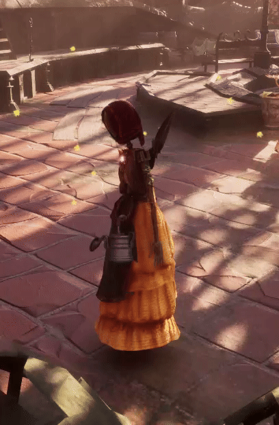
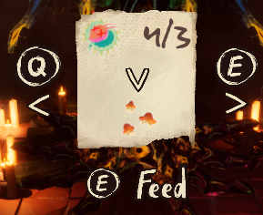
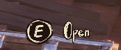

About the Project
Bloom is an eerie 3D gardening adventure game where you grow strange, unnatural plants to feed a mysterious creature holding you captive. You explore a hostile, atmospheric world to harvest grotesque fruit and fragments of your soul in a desperate attempt to earn your freedom.
The game was developed as a student project at Breda University of Applied Sciences by a multidisciplinary team of designers, programmers, and artists. I worked as one of three Gameplay/Systems Programmers, responsible for building core gameplay systems and UI.
My Contributions
Inventory System
I built the inventory system from scratch. Items have specific stack sizes, adding a duplicate item first fills existing stacks before occupying a new slot. The player can scroll through items and rearrange their inventory by selecting and swapping slots.
Item Log
I created an item log notification that appears in the top-right corner whenever the player gains or loses an item. Each entry shows the item icon, the amount, and a + or − indicator. Multiple entries stack vertically.
Held Item Visualization
I implemented the visual switching of held items. When the player equips a tool like the shears or watering can, it appears in their hand. When switching away, the item gets stored on the player's body, the watering can clips onto the belt, and the shears go on the back.

Shop System
One of the main systems I built was the shop. After discussing the design with a designer, I created a set of reusable widget blueprints: a cost item widget to display individual resource costs, a shop item widget that combines the buyable item with its cost list, and the shop grid itself that populates dynamically with available items.
Creature Trading
The creature is a simpler trading system where the player can exchange a single item for a seed. I reused parts of the shop widget system to quickly build a new UI for this. The player can cycle through all available trades to buy different seeds.

Diegetic UI
I developed several in-world UI elements that appear in the game world rather than as part of the HUD.
Plant Upgrade & Satisfaction
When approaching a plant, a UI panel appears above it showing the upgrade cost. It checks the player's inventory in real time and colors the text green or red based on whether they have enough resources. I also made a satisfaction indicator that shows how much water a plant has left, initially a progress bar, later redesigned into three water droplets.

Interaction Prompts
Walking up to interactable objects like chests displays a diegetic prompt showing which button to press and what the action does. Each interaction type has its own prompt with custom art.

Sound Effects & Music
At the end of the project I integrated the audio. Music tracks play on loop with automatic transitions between songs, and fade out when moving between indoor and outdoor areas. I also added tool sound effects for the shears and watering can, and animation-driven footstep sounds with randomized pitch for variation.
Tools & Tech
The project was built in Unreal Engine using Blueprints. Version control was handled through Perforce. The team used agile sprints to organize work throughout the block.
Credits
Bloom was made by a team at Breda University of Applied Sciences. For the full credits list, visit the itch.io page.